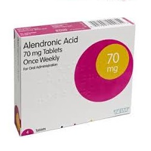

Alendronic acid/Alendronate

Alendronic acid/Alendronate ဆိုတာဘာဆေးလဲ
- အရိုးကြွတ်ဆတ်ပွပြီး အရိုးကျိုးလွယ်ခြင်းကို ကာကွယ်ပေးသော၊ အရိုးများကို နဂိုပုံစံအတိုင်း သန်မာအောင် စောင့်ရှောက်ပေးသော Bisphosphonates အုပ်စုဝင် ဆေးတစ်မျိုး ဖြစ်ပါသည်။
- အရိုးပျက်စီးမှုဖြစ်စဉ်ကို နှေးကွေးအောင်လုပ်ပေးသောအာနိသင်ရှိပါတယ်။
- Fosamax ဆေးဟုအများဆုံးသိကြပါတယ်။
ဆေးကိုဘယ်လိုအခြေအနေတွေမှာသုံးလို့ရလဲ
- အသက်ကြီးသောသူများ၊ သွေးဆုံးပြီးသော အမျိုးသမီးများ၊ စတီးရွိုက်ဆေး(Prednisolone)ကို အချိန်ကြာကြာ ဆွဲသောက်နေရသော သူများတွင် အရိုးပွခြင်း ပိုဖြစ်နိုင်ပါသည်။
- အရိုးပွခြင်းဆိုသည်မှာ အရိုးများပါးလာပြီး ကျိုးလွယ်သော အခြေအနေရောက်နေပြီဟု ဆိုလိုခြင်းဖြစ်ပါသည်။
- Alendronate ဆေးသည် အရိုးပွခြင်းများကိုသက်သာပေးနိုင်သလို အရိုးပွခြင်းမှကာကွယ်မှုလည်း ပေးနိုင်ပါသည်။
ဆေးကိုဘယ်လိုသောက်ရမလဲ
- ဆေးကိုဝါးမစားရပါ။ ရေများများနှင့်မျိုချပါ။ ဆေးသောက်ပြီး မိနစ်၃၀ခန့် လဲလျောင်းခြင်း မပြုရပါဘူး။
- ဆေးကို အစာမရှိသောအချိန်တွင်သောက်မှ ဆေးအာနိသင် အကောင်းဆုံးရနိုင်မှာ ဖြစ်ပါတယ်။ ညအိပ်ရာဝင်ချိန် မသောက်သုံးသင့်ပါ။
- ကယ်လ်ဆီယမ်နှင့် သံဓာတ် ပါသောအားဆေးများ၊ လေဆေးများ၊ ကော်ဖီ၊ လက်ဖက်ရည်၊ ဆိုဒါအအေးများသည် ဆေးအာနိသင်ကို လျော့ကျစေပါသည်။
ဆေး၏ဘေးထွက်ဆိုးကျိုးဘာတွေရှိလဲ
- ဗိုက်နာခြင်း၊ လေပွလေထခြင်း၊ ပျို့အန်ခြင်း၊ ဝမ်းလျှောခြင်း၊ ဝမ်းချုပ်ခြင်းများ ဖြစ်တတ်သည်။ ရောဂါလက္ခဏာဆိုးလျှင် နီးစပ်ရာဆေးခန်း သွားပါ။
- ပြင်းထန်ဆိုးကျိုးများအနေနှင့် မေးရိုးနှင့် နားကိုက်ခြင်း၊ အရိုးအဆစ်နှင့်ကြွက်သားများ မခံမရပ်နိုင်အောင် နာကျင်ခြင်း၊ တင်ပဆုံရိုးနှင့်ပေါင်ရိုးများနာလာခြင်း၊ ခြေလက်များရောင်လာခြင်း၊ ဝမ်းမည်းမည်းသွားခြင်း၊ အညိုရောင်အန်ခြင်းများ ဖြစ်နိုင်ပါသည်။
- ရှားရှားပါးပါးအနေဖြင့် ဆေးသောက်နေစဉ် မျိုချရခက်ခြင်း၊ ရင်ပူခြင်း၊ ရင်ဘတ်အောင့်ခြင်းများ ဖြစ်လျှင် စိုးရိမ်ရသောကြောင့် ဆရာဝန်နှင့် အမြန်ပြဖို့လိုပါမယ်။
- အင်ပျဉ်ထခြင်း၊ ယားခြင်းစသော ဓာတ်မတည့်ဖြစ်ခြင်း မျိုး ရှားပါသည်။
ဆေးသောက်လျှင်ဘာတွေဂရုစိုက်ဖို့လိုလဲ
- အရင်ကဆေးမတည့်တာ ဖြစ်ဖူးလျှင်၊ အစာပြွန်ရောင်ရောဂါ၊ ကျောက်ကပ်ရောဂါ၊ အစာအိမ်နှင့် အူလမ်းကြောင်းရောဂါ၊ ကယ်လ်ဆီယမ်ဓာတ်နည်းလျှင် ဆရာဝန်နှင့်ကြိုတင်တိုင်ပင်ပါ။
- အချို့ဆေးသောက်နေသူများတွင် မေးရိုးရောဂါ ဖြစ်နိုင်ပါသည်။
- ပုံမှန်သွားဆရာဝန်နှင့် သွားနှင့်ခံတွင်းစစ်ခြင်း၊ သွားနှင့်ခံတွင်း သန့်ရှင်းရေးပုံမှန်လုပ်ပေးခြင်းဖြင့် ကာကွယ်နိုင်ပါသည်။
- ကလေးများနှင့် ကိုယ်ဝန်ဆောင်သည်များ မသုံးသင့်သော ဆေးဖြစ်ပါတယ်။
ဆေးအာနိသင်ဘာတွေရှိလဲ
- Alendronate နှင့်အခြားသောဆေးများ၊ တိုင်းရင်းဆေးများနှင့် တွဲသောက်လျှင် ဆေးအာနိသင်ပြောင်းနိုင်သောကြောင့် ဆရာဝန်နှင့်တိုင်ပင်ပြီးမှ သောက်သင့်ပါတယ်။
ဆေးသောက်များသွားလျှင်ဘာတွေဖြစ်မလဲ
- ဆိုးဆိုးရွားရွားဗိုက်နာခြင်း၊ ရင်ပူခြင်း၊ ရင်ဘတ်အောင့်ခြင်း၊ ကြွက်တက်ခြင်း၊ ခြေလက်များအားမရှိခြင်း၊ စိတ်ထင်ယောင် ထင်မှားဖြစ်ခြင်းများ ထိဖြစ်နိုင်ပါသည်။
- Alendronateဆေးသည် အရိုးပွခြင်း ဖြစ်နိုင်သော လူကြီးများအတွက် သင့်လျော်သော ဆေးဖြစ်သော်လည်း ဆိုးကျိုးရှိနိုင်သောကြောင့် ဆရာဝန်နှင့် တိုင်ပင်ပြီးမှ သောက်သင့်သော ဆေးဖြစ်သည်။
Source– ဒေါက်တာအိမ့်ချယ်ရီ